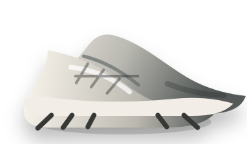
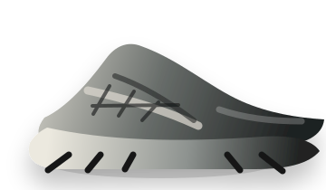
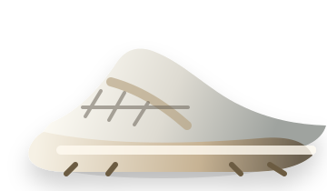
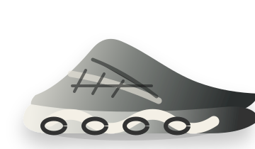

HOKA
城市户外爆发指数 ★★★★★

本周热度 92 ↑凭借轻量舒适与城市徒步渗透，持续占领户外与通勤双高位。
查看洞察详情 →爆发指数 ★★★★★

本周热度 92 ↑凭借轻量舒适与城市徒步渗透，持续占领户外与通勤双高位。
查看洞察详情 →爆发指数 ★★★★☆

本周热度 86 ↑XT 系列持续出圈，机能美学与场景化穿搭推动品牌热度上升。
查看洞察详情 →爆发指数 ★★★★☆

本周热度 78 ↑复古球鞋回潮，简约美学与明星效应让品牌快速破圈。
查看洞察详情 →爆发指数 ★★★★☆

本周热度 76 ↑科技感与设计感并存，跑圈市场份额稳步扩大。
查看洞察详情 →爆发指数 ★★★★☆
本周热度 71 ↑从保暖需求延伸到时尚穿搭，品牌心智进一步扩大。
查看洞察详情 →以一款爆品带动户外产品进入市场，凭借产品力快速打开用户认知。
通过强烈的风格定位和视觉表达，吸引用户关注并形成认同。
精准定位生活方式和细分场景，成为该场景的代表品牌。
依靠内容平台的高效传播，快速建立品牌认知与用户兴趣。
先在特定圈层形成强认同，再逐步破圈扩散。